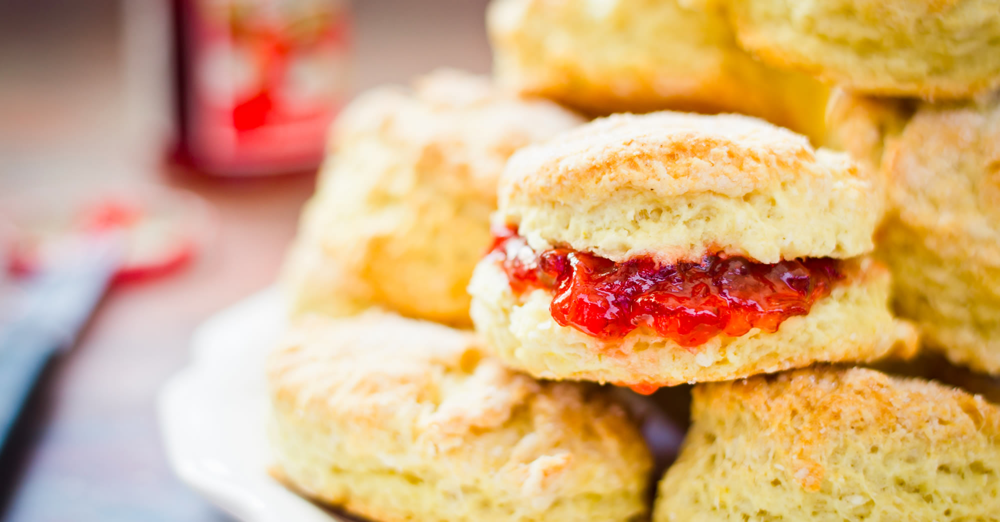

Scones: the most resplendent of snacks
Occassionally maligned and misunderstood; the scone is a quintessentially British classic.

Incredible scones, picture from Wikipedia
Recipe and srving suggestions follow.
Ingredients
500g self-raising flour
1tsp salt
1tsp baking powder
1/4tsp bicarbonate of soda
1/2tsp cream of tartar
150g butter
150g granulated sugar
1 egg
3/4pt milk
1/2tsp vanilla extract
Method
Preheat oven to 220 C (425 F, Gas Mark 7). Line a baking sheet with parchment paper.
In a large bowl, whisk together the flour, salt, baking powder, bicarbonate of soda, and cream of tartar.
Add the butter and use your fingertips or a pastry blender to work it into the flour mixture until it resembles coarse breadcrumbs.
Add the sugar, egg, milk and vanilla extract. Mix until a dough forms.
Turn the dough out onto a floured surface and gently knead it a few times until it comes together.
Pat the dough into a circle that is about 1 inch (2.5 cm) thick.
Use a biscuit cutter or the rim of a glass to cut out the scones. You can also just use a knife to cut the dough into squares or triangles.
Place the scones on the prepared baking sheet, leaving about 1 inch (2.5 cm) of space between each scone.
Bake the scones for 15-20 minutes, or until they are golden brown.